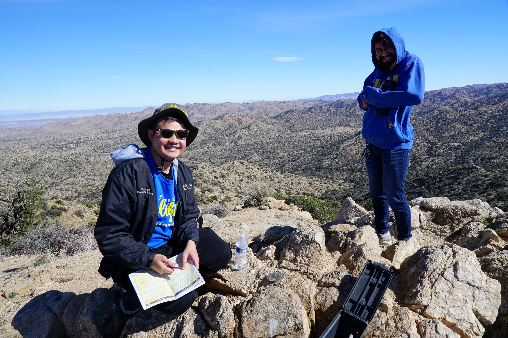
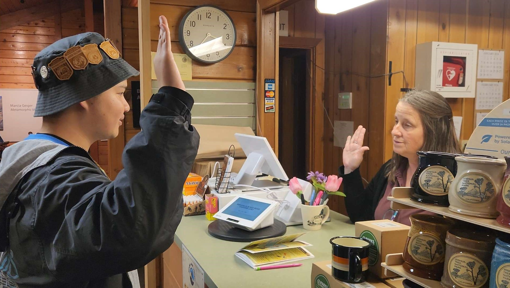
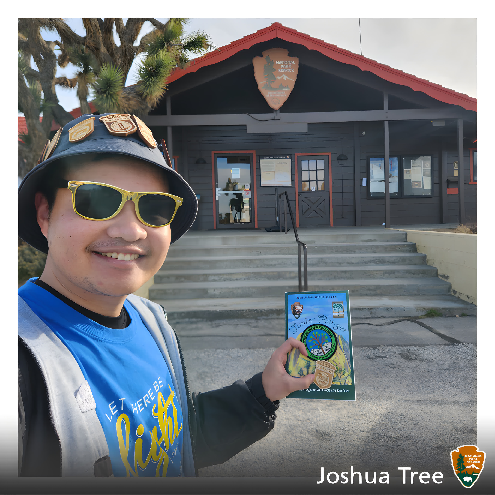

{kind=link}


Joshua Tree National Park, located in southeastern California, is renowned for its stunning desert landscapes characterized by vast expanses of rugged rock formations, unique Joshua trees, and diverse plant and animal life. Spanning over 790,000 acres, the park is a popular destination for outdoor enthusiasts, offering opportunities for hiking, rock climbing, camping, and stargazing. Visitors can explore the park's distinct ecosystems, from the high Mojave Desert in the western part, with its iconic Joshua trees dotting the landscape, to the lower Colorado Desert in the eastern portion, featuring cholla cactus gardens and striking geological formations. Joshua Tree National Park is not only a haven for adventure seekers but also a place of serene beauty and ecological significance, attracting visitors from around the world to marvel at its natural wonders and experience the tranquility of the desert environment.
Visiting Joshua Tree is one of the best experiences I had as an aspiring Junior Ranger! I visited the Black Rock Canyon visitor center, which at the time of writing actually didn't require any entrance fee at all! My UCLA buddies and I hiked the Panorama Loop, and the unique desert argriculture is superb! Tree hugging was a common pose during our photography sessions. Hiking Panorama Loop was definetly a challenge (especially in one day), but as a group made experiences more fun! We were able to ascend Warren Peak (through panting and many water breaks). The funny thing is that I left my water bottle on the peak, and didn't realize that I forgot until after I descended from the peak. Oh, how dehydrated I was!
After the hike, I did my pledge with the staff ranger inside the Black Rock Canyon visitor center. The ranger there was pretty nice and straight forward, giving us a patch for hiking over 100 miles during our times as Junior Rangers! Afterwards, visited the main area of the park to try and catch some astrophotography around Quail Springs. Unfourtanetly, it was about to rain, so we only were able to catch a glimpse of the night sky before we had to througly retreat to Black Bear Diner. Overall, Joshua Tree was a fun park, and I'll definetly visit again to visit other parks of the park! Overnight is definetly in the books for the many future photos for night photography.
To be Uploaded

